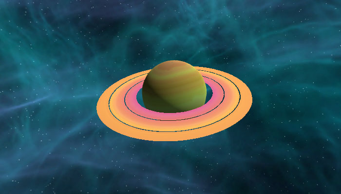
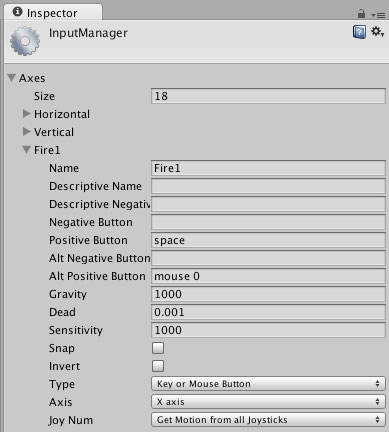
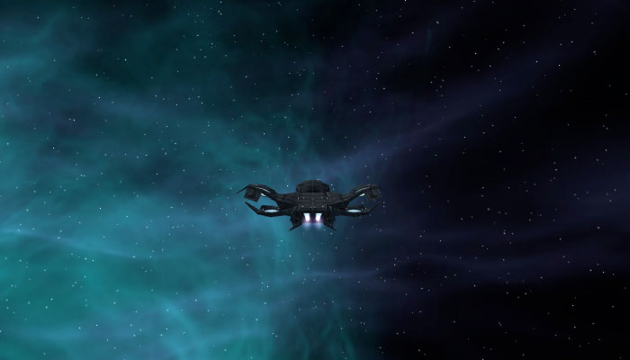
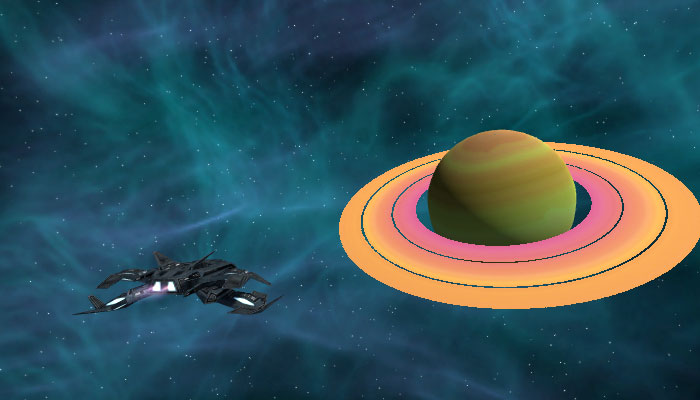

No último post deste série sobre o desenvolvimento do meu jogo Final Frontier falei sobre o novo skybox e melhorei a destruição da caixa que representa um asteroide. Desta vez trabalhei em melhorias para a câmera e o controle da nave, além de alterar novamente o skybox e adicionar um planeta.
Um planeta na galáxia
Um skybox adiciona detalhes incríveis ao jogo, e muitas vezes o jogador não repara na arte que está acima de suas cabeças. O mapa da Lua no jogo Destiny tem um skybox incrível, com a Terra e a ISS destruída em destaque no céu.
Eu decidi mudar o skybox para outra opção do mesmo asset pack, desta vez com uma névoa verde que adiciona mais detalhes. Também adicionei um novo asset pack gratuito chamado Vast Outer Space, que contém modelos de planetas, asteroides e algumas partículas. Adicionei o planeta abaixo, ele parece próximo mas está bem longe e aumentei o modelo 1000 vezes. Também alterei o Clipping Planes da câmera, aumentando o Far para 10000, assim o planeta aparece ao fundo mesmo estando bem longe.

Pilotando a nave
Até então o controle da nave era algo temporário, até mesmo para um quase protótipo. Decidi pesquisar como eu gostaria que o controle da minha nave fosse, e usei como referência alguns jogos que gostava de jogar no Nintendo 64 e Playstation 2. Estava em dúvida entre: Star Fox 64, onde a a câmera fica fixa seguindo a nave; Star Wars Rogue Squadron, onde o jogador tem mais liberdade porém com variação de zoom na nave; Star Wars Starfighter (video abaixo), onde encontrei a melhor referência para o que eu quero fazer no Final Frontier.
Eu poderia modificar o código que fiz para a movimentação da nave, adicionando ainda mais linhas de código, mas decidi pesquisar outras maneiras de controlar a nave. Mesmo sendo um código temporário, muitas linhas de código podem dificultar implementar novas features, portanto decidi melhorar esta parte do código. Usei como referência o video abaixo, que ensina a fazer um jogo simples de pilotar aviões.
O resultado final, que foi uma mistura do que eu tinha feito com novas coisas do video acima, ficou bem melhor do que eu esperava. Além dos direcionais do teclado agora também é possível controlar usando um controle conectado ao computador, testei com o Xbox 360 Controller for Windows e o Steam Controller. Para deixar o tiro mais simples e reduzir uma verificação no código adicionei o botão space como um trigger para o botão Fire1 no Input Manager (Edit > Project Settings > Input).

Câmera
Na versão anterior do controle da nave a câmera estava dentro do prefab da nave, o que dava a impressão de uma câmera dura seguindo a nave. Como alterei o controle, foi natural também adaptar a câmera para esta nova situação. Decidi tentar usar o LookAt como é mostrado no video acima, mas não funcionou muito bem no meu caso, pois quando a nave dava um loop a câmera girava e ficava de cabeça para baixo.

Meu erro foi assumir que tudo do video acima funcionaria no meu caso, porém a câmera tem um comportamento diferente, então removi o LookAt e fiz a rotação da câmera ser a mesma da nave, o que ficou exatamente como eu queria. Ajustei a distância da câmera adicionando um offset no script, assim ela ficou um pouco mais afastada, além de dar um efeito legal ao rodar o jogo (a nave sai de trás da câmera e vai para o local do offset).

Próximos passos
Agora que a movimentação da nave está melhor vou começar a trabalhar em uma mira na tela, para o jogador saber onde está atirando, e vou substituir a caixa branca por um modelo de asteroide. Provavelmente vou dar uma pesquisada em algum efeito de partícula para a nave e os tiros, substituindo as bolas brancas por algo que faça mais sentido ser atirado por uma nave no espaço.
O andamento do projeto pode ser conferido no GitHub e neste link você pode ver as alterações no projeto até este post. Todos os posts desta série sobre meu projeto podem ser vistos na tag Final Frontier, e como sempre qualquer sugestão ou opinião é bem vinda!